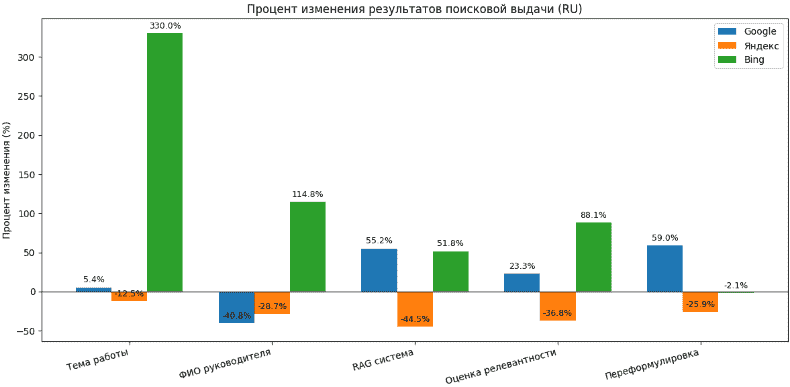

Отчет о результатах поиска
Поиск проводился с использованием трех поисковых систем: Google, Яндекс и Bing. Запросы формулировались на русском и английском языках. В таблицах зафиксировано количество найденных документов на 21.09.2026 (начало работы) и на 02.11.2026 (завершение).
Примечание: Поисковые системы DuckDuckGo и Yahoo! были исключены из анализа, так как первая скрывает точное количество результатов, а вторая использует поисковый движок Bing и не дает независимой статистики.
Таблица 1. Результаты поиска на 21.09.2026 (Русский язык)
| Строка поиска | Яндекс | Bing | |
|---|---|---|---|
| Исследование методов переформулировки запроса и оценки релевантности фрагментов в медицинской русскоязычной RAG-системе | 37 | 8 000 000 | 10 |
| Харченко Анна Владимировна, КубГУ | 1 350 | 394 000 | 1 550 |
| RAG система | 435 000 | 928 000 | 8 170 |
| Оценка релевантности фрагментов текста | 223 000 | 816 000 | 9 780 |
| Переформулировка запроса | 217 000 | 328 000 | 96 |
Таблица 2. Результаты поиска на 02.11.2026 (Русский язык)
| Строка поиска | Яндекс | Bing | |
|---|---|---|---|
| Исследование методов переформулировки запроса и оценки релевантности фрагментов в медицинской русскоязычной RAG-системе | 39 | 7 000 000 | 43 |
| Харченко Анна Владимировна, КубГУ | 799 | 281 000 | 3 330 |
| RAG система | 675 000 | 515 000 | 12 400 |
| Оценка релевантности фрагментов текста | 275 000 | 516 000 | 18 400 |
| Переформулировка запроса | 345 000 | 243 000 | 94 |
Таблица 3. Результаты поиска на 21.09.2026 (Английский язык)
| Строка поиска | Яндекс | Bing | |
|---|---|---|---|
| Research of query reformulation methods and fragment relevance assessment in a medical Russian-language RAG system | 32 700 | 34 000 | 10 |
| Kharchenko Anna Vladimirovna, KubSU | Не найдено | 149 000 | 17 |
| Retrieval-Augmented Generation system | 15 500 000 | 662 000 | 4 960 |
| Text fragment relevance assessment | 3 930 000 000 | 392 000 | 2 070 |
| Query reformulation | 391 000 | 55 000 | 5 520 |
Таблица 4. Результаты поиска на 02.11.2026 (Английский язык)
| Строка поиска | Яндекс | Bing | |
|---|---|---|---|
| Research of query reformulation methods and fragment relevance assessment in a medical Russian-language RAG system | 2 840 | 42 000 | 207 |
| Kharchenko Anna Vladimirovna, KubSU | 1 | 133 000 | 17 |
| Retrieval-Augmented Generation system | 12 200 000 | 438 000 | 1 810 |
| Text fragment relevance assessment | 2 970 000 000 | 328 000 | 5 600 |
| Query reformulation | 157 000 | 39 000 | 6 800 |
Диаграмма изменения результатов поиска

Рисунок 1 — Процент изменения результатов поисковой выдачи
Анализ результатов
1. Эффективность поисковых систем: Сравнивая результаты запросов, можно сделать вывод, что Google и Яндекс показали наилучшие результаты по количеству найденных документов на обоих языках. Bing продемонстрировал меньшие цифры, что может быть связано с особенностями индексации научных статей. Для поиска научных статей по теме RAG и медицинскому NLP наиболее эффективными оказались Google Scholar и PubMed, а для русскоязычных материалов — КиберЛенинка и eLibrary.
2. Равномерность освещения в языковых пространствах: На английском языке количество документов по теме RAG значительно выше (например, 15 500 000 в Google на 21.09.2026), что объясняется высокой популярностью темы в мировом научном сообществе. Русскоязычный сегмент представлен меньшим количеством документов, однако запросы, связанные с переформулировкой запроса, показали достаточно высокие результаты в Яндексе (8 000 000), что подтверждает наличие интереса к теме в русскоязычном сегменте.
3. Динамика изменения информационной ситуации: При сравнении двух таблиц (разница в 1,5 месяца) наблюдается разнонаправленная динамика. Для англоязычных запросов характерно **снижение** количества результатов (например, «Query reformulation» в Google упало с 391 000 до 157 000, «Text fragment relevance assessment» — с 3,9 млрд до 2,97 млрд). Это может быть связано с очисткой индекса от нерелевантных страниц или изменением алгоритмов ранжирования. В то же время для русскоязычных запросов, наоборот, наблюдается **рост**: «RAG система» в Google выросла с 435 000 до 675 000 (+55%), «Переформулировка запроса» — с 217 000 до 345 000 (+59%).
4. Аномалии в результатах поиска: Аномально высокие результаты по запросу «Text fragment relevance assessment» в Google (3,9 млрд) связаны с общим характером запроса и большим количеством смежных публикаций. В то же время запросы, уточняющие предметную область (медицинская RAG-система), дают более релевантные, но меньшие по объему результаты, что подтверждает важность точной формулировки.
5. Выводы: Информационная ситуация по теме магистерской работы является благоприятной. Наблюдается устойчивый рост публикаций по русскоязычным запросам, что подтверждает актуальность исследования. Для дальнейшей работы рекомендуется использовать Google Scholar и PubMed для поиска англоязычных статей, а КиберЛенинку и eLibrary — для русскоязычных. Результаты поиска могут быть использованы для формирования разделов реферата, библиотеки и перечня ссылок.